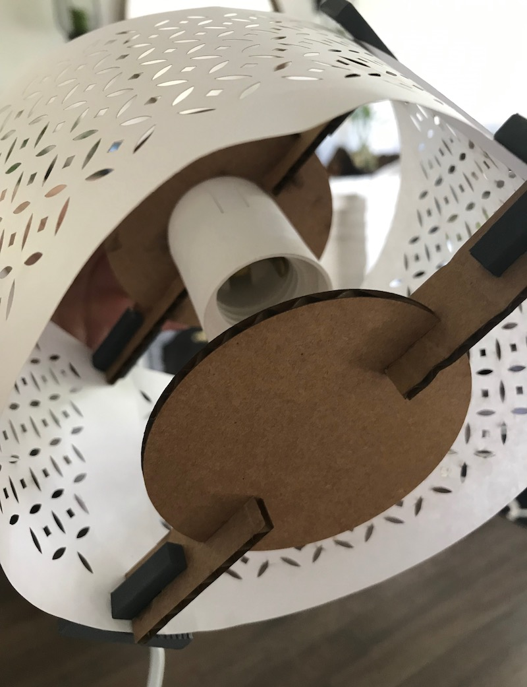
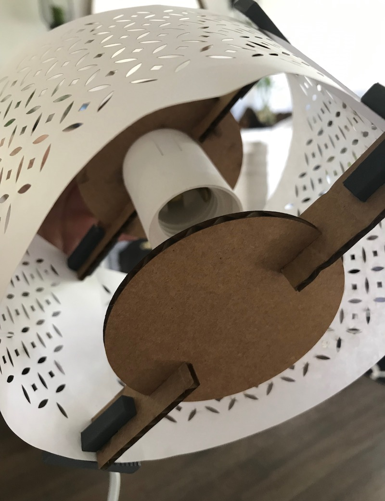

3D Printed and Laser Cut Lamp Shade
This assignment was to create a lamp shade by combining parts made with 3D printing, laser cutting, and an existing light socket. I used this small hanging light socket.
Inspiration & Brainstorming
I looked up Ikea lamp shades because I remembered that I had seen ones with nice patterns there before. I found the Ikea NYMO lamp and decided to recreate it.
From there, I sketched out some ideas for how I could recreate the drum shape. I decided to use paper for the outside of the drum because it could be bent. I held the paper together using 3d printed and cardboard parts.
I decided to use two standard pieces of 8.5 x 11" paper as the sides of the drum. Because of this, I decided to make a 6" diameter drum.
3D printed clasps

I created the blue portion of this shape in Illustrator and imported it into Rhino.
First, I designed the clasps on the outside of the lamp that would be 3d printed and hold the paper in place. The shape is rounded on the inside so that the paper pieces will curve around into a circle. They are flat on the outside so that they can be 3d printed on that edge and avoid having to print supports..
One issue I ran into is trying to join shapes together in Rhino. I had the shapes in Wireframe view, and did not realize that they were hollow because I had to apply the Cap command. After repeatedly trying to apply BooleanUnion, I finally decided to look at items in Rendered mode, at which point I saw my mistake. Once I figured this out, I applied the Cap command and proceeded.
I went through 6 3D printing rounds before I finally had all the pieces I needed. Some things that went wrong were:
- File scaled wrong in Dremel
- Wrong file selected on 3d printer
- Nozzle not hot enough
- Nozzle hit and broke piece
The biggest issue was with temperatures. As you can see in the image above, I tried several times to print at 230 degrees, but it did not work. When I switched to 235, it worked much better.
Final print in Dremel. Once I was confident that I had all the settings correct, I printed 3 pieces for a total of 4 3d printed pieces.
Cardboard connectors

Grasshopper file & Rhino output that I didn't end up using because I redesigned the shape and decided it would be faster to redo in Illustrator.
I decided to make the inner parts of the lamp, including the ones that connected to the socket, out of cardboard because they were large and would take a long time to 3d print. After sketching my initial design, I made the shapes using Grasshopper. However, I eventually decided to change the design of the inside of the lamp and decided that it was not worth re-doing the design in Grasshopper, so I switched to Illustrator to save time.

I ended up making the cardboard pieces in Illustrator because it allowed me to change the design more quickly than Rhino.
Paper pattern
 I had the most fun creating my pattern. I tried first to use Adobe Experience Design because it has a great "repeat grid" feature that is useful for repeating patterns. However, I could not get the SVG to properly import into Illustrator, so just as with the cardboard pieces, I ended up recreating the pattern in Illustrator.
I had the most fun creating my pattern. I tried first to use Adobe Experience Design because it has a great "repeat grid" feature that is useful for repeating patterns. However, I could not get the SVG to properly import into Illustrator, so just as with the cardboard pieces, I ended up recreating the pattern in Illustrator.
 

Uh oh! Not enough room for the bulb to fit.
When I first aseembled all the pieces, I realized that I had completely forgot to consider the fact that I had to leave room for the light bulb. Luckily, the fix was easy. I simply made and printed a taller version of the paper pattern and reassembled.
Final Result
Finally, with the taller paper piece, I was able to assemble everything. I had to be careful with fitting the paper pieces around the 3D printed parts to make sure the paper did not rip.


The final result!
Thanks
A big thanks to Hannah and Elizabeth for answering some questions at the MILL about the printers, and for Andrew, a MILL employee, for helping me troubleshoot the 3D printer and laser cutter.
Source Files
Download the source files here: